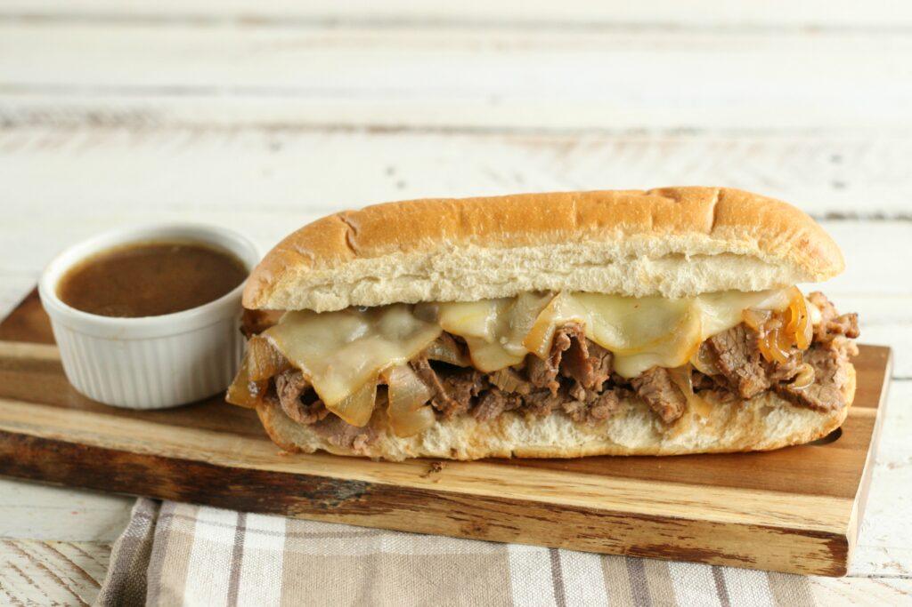

French Dip Sandwiches

French Dips: an umami bomb that always hits the spot.
This hot sandwich and broth to accompany it will have your mouth watering.This can be a quick dinner on a busy day, or a delicious lunch to impress your friends. Pro tip: Pairs incredibly well with kettle cooked potato chips.
Ingredients
- 1 16-inch sourdough baguette
- 1 pound thinly sliced roast beef
- 1/2 pound provolone cheese
- 1/2 stick butter
- 1 packet 'au jus' gravy mix
- 1 white or yellow onion
- salt
- 2 tbsp vinegar (red or white)
Instructions
- Bring water to a boil and add 'au jus gravy' mix. Lower heat to low/medium.
- Caramelized Onions
- Thinly slice onions
- Add 3 tablespoons butter to pan on medium heat
- Add chopped onions to pan and lower heat
- Stir onions until brown in color
- add vinegar to pan to deglaze and cut heat
- Set oven to broil on high
- Slice baguette and place under heat until toasted
- Once toasted, remove from oven, liberally butter and add provolone to each slice.
- Return to oven until cheese melted.
- Dip roast beef in au jus and add to bread. Top with Caramelized Onion.
- Enjoy!
Home Page